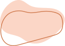
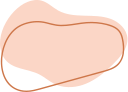

tel.: +48 600 32 58 59
email: marlena.podbielkowska@gmail.com
 

Warsztaty grupowe:
"Jak zachować balans pomiędzy rolą mamy a byciem sobą. 10 wskazówek które mogą ułatwić codzienne zmagania ze sobą w nowej roli."
Często słyszymy stwierdzenie "Szczęśliwa mama, szczęśliwe dziecko" - co to właściwie znaczy? Na tym warsztacie zastanowimy się, co znaczy dla każdej z nas "zadbanie o siebie". Pokażę perspektywę, w której myślenie o sobie w pierwszej kolejności nie musi oznaczać zaniedbywania dziecka i obowiązków, a może być źródłem energii dla mamy oraz znaczącym czynnikiem wspierającym zdrowie psychiczne kobiety. Przedstawię konkretne tipy jak można wspierać siebie w huraganie codziennych obowiązków.
"Podróż w nieznane, co naprawdę się zmienia wraz z przyjściem na świat dziecka."
Po obwieszczeniu światu, że spodziewamy się dziecka, słyszymy: zobaczysz wszystko się zmieni. Zastanowimy się, co to naprawdę znaczy i w jakich obszarach naszego życia te zmiany są najbardziej odczuwalne. Podpowiem jak sobie z nimi radzić i zobaczyć w tym szansę, a nie koniec świata.
"Ta sama para, a my jacyś inni."
O tym jak rodzicielstwo wpływa na nasze relacje w parze, dlaczego wydaje nam się że, partner to nowy człowiek, a kłótnie nie dają nam spać bardziej niż niemowlę. Przyjrzymy się swoim reakcjom na partnera i nad tym jak się zmieniły odkąd pojawiło się dziecko. Zastanowimy się, co można poprawić, żeby wszystkim żyło się lżej pod jednym dachem.
"O oczekiwaniach."
Czy możliwe jest oczekiwać na dziecko i być wolnym od oczekiwań? Zobaczymy, co za nimi stoi i skąd się biorą. Pokażę, jak uporczywe wyobrażenia tego, jak powinno być, mogą znacząco utrudniać rzeczywistość. Poszukamy sposobów jak je okiełznać i sprawić, by stały się elastycznym kompanem całego procesu stawania się rodzicem.
Programy warsztatów opracowuję samodzielnie, są wypadkową mojej
wieloletniej edukacji psychoterapeutycznej, doświadczenia z
pacjentami oraz własnych przeżyć i obserwacji, co stanowi o
niepowtarzalności.
Warsztaty są przeznaczone dla rodziców głównie małych dzieci
(chociaż niekoniecznie) oraz oczekujących narodzin. Maksymalna
preferowana liczba osób w grupie - 12.
Chętnie współpracuję z salami zabaw, centrami kultury, i właściwie
każdym miejscem zainteresowanym moją ofertą. Mogę poprowadzić jeden
warsztat albo skomponować cykl zajęć dla rodziców, lub tylko dla
mam/ dla ojców, w zależności od pomysłu i możliwości
zainteresowanych :)
Jeśli chcesz skorzystać z mojej
pracy, lub masz ochotę o coś zapytać, zapraszam do kontaktu.